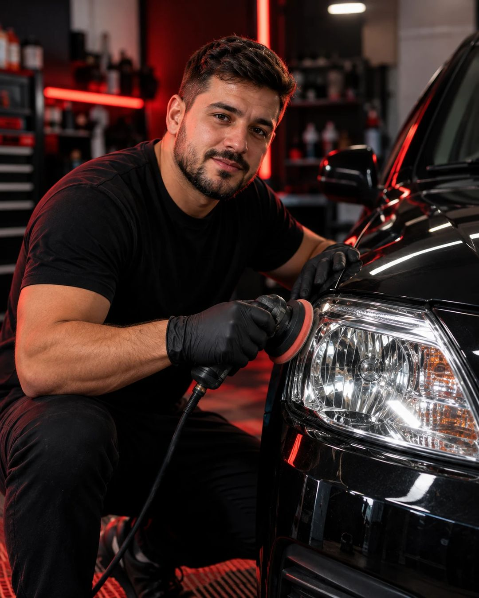
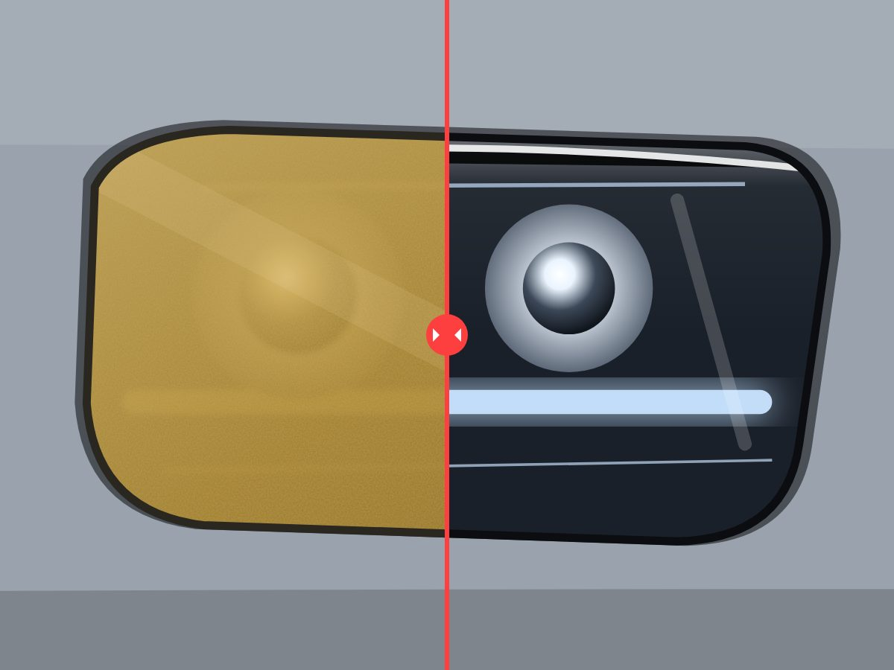
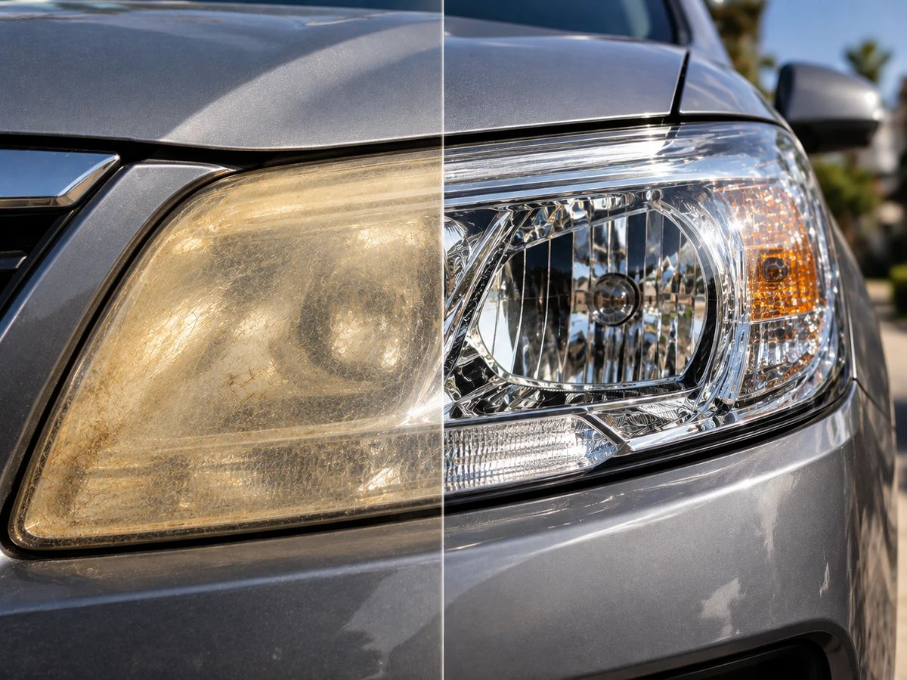

O passo a passo exato para restaurar faróis em menos de 1 hora, com material de loja de bairro, mesmo que você nunca tenha encostado uma lixa num carro. Use no seu veículo ou transforme em renda extra já nesta semana.
Tudo isso por apenas R$ 19,90 — pagamento único
Material em PDF • Enviado no seu WhatsApp • Garantia de 7 dias
Seja honesto com você mesmo. Se você se identificar com a coluna da esquerda, esse é o melhor investimento de R$ 19,90 que você vai fazer este ano.

Imagem ilustrativaSem segredo e sem enrolação técnica: são 4 etapas simples, na ordem certa. É essa sequência que faz o farol ficar transparente — e continuar assim.
Todo carro com alguns anos de uso sofre com isso. A demanda está estacionada em cada rua da sua cidade.
Lixas, polidor e proteção. Com pouco dinheiro você já monta o kit para os primeiros serviços.
Menos de 1 hora por par. Dá para fazer à noite, no fim de semana ou entre outros serviços.
O sol amarela o policarbonato de qualquer carro. Seus clientes estão na garagem do vizinho.
Uma foto de antes e depois convence mais que qualquer argumento. O cliente vê na hora.
Farol limpo ilumina melhor à noite e ajuda a evitar problemas na vistoria. É estética e é segurança.
Quem confia em você no farol volta para polimento, higienização e mais. É o primeiro passo.
Do amarelado e opaco ao transparente e brilhante: é isso que o passo a passo do método faz pelo farol.


Imagens ilustrativas.
Do farol amarelado ao cliente satisfeito: 4 guias em PDF, objetivos e fáceis de seguir, mais um bônus para usar com seus clientes.
Por que o farol amarela, a lista exata de materiais baratos (com alternativas) e como proteger a lataria antes de começar.
A sequência certa de lixas para tirar o amarelado sem riscar e o polimento que devolve a transparência, com ou sem máquina.
A etapa que faz o resultado durar e os deslizes que estragam o serviço, com o que fazer se algo der errado.
Como calcular seu preço para ter lucro e ideias simples para vender no bairro, no WhatsApp e nas redes.
Modelo pronto para entregar ao cliente e um checklist para não esquecer nenhuma etapa. Passa confiança e valoriza seu serviço.
Pense bem: uma única restauração de faróis numa oficina costuma custar bem mais que isso. Aqui você aprende a fazer quantas vezes quiser, no seu carro e no dos outros.
Um serviço feito já paga o material várias vezes. O resto é lucro.
Material completo por apenas
R$19,90
Pagamento único • Sem mensalidade
Quero meus PDFs agora🔒 Compra 100% segura • Pix, cartão ou boleto • PDFs enviados no seu WhatsApp
Receba os PDFs, leia e teste o método. Se em até 7 dias você achar que não valeu cada centavo, é só pedir o reembolso que devolvemos todo o seu dinheiro. Sem perguntas, sem burocracia. O risco é todo nosso.
Ainda ficou alguma dúvida? Veja as respostas abaixo.
Não. O material foi feito para iniciantes, com linguagem simples e passo a passo em ordem. Os PDFs ficam com você para consultar quantas vezes precisar.
Não. Você aprende a técnica com materiais simples e baratos. A máquina deixa o serviço mais rápido, mas é opcional para começar.
Depois da confirmação do pagamento, os PDFs são enviados para o número de WhatsApp informado na compra. No Pix e no cartão, a confirmação é rápida. Confira se digitou o número certo no checkout.
Para sempre. Os PDFs são seus: salve no celular, no computador ou imprima para deixar na garagem.
Depende principalmente da etapa de proteção UV — e é exatamente por isso que ela tem um guia só dela. Feita do jeito certo, o resultado dura muito mais do que os "truques" caseiros que amarelam em semanas.
Pode. Inclusive um dos PDFs ensina como precificar e conseguir os primeiros clientes, e o bônus traz um termo de garantia para entregar a quem contratar você.
Você tem 7 dias de garantia. Se não gostar por qualquer motivo, pede o reembolso e recebe 100% do valor de volta.
Você pode continuar olhando para esse farol amarelado — ou investir R$ 19,90, seguir o passo a passo e ver a diferença hoje mesmo. Com 7 dias de garantia, a única coisa que você arrisca é ficar como está.
Material em PDF • Enviado no seu WhatsApp • Garantia de 7 dias